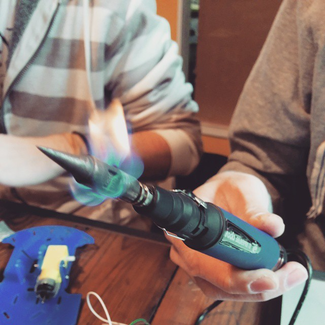
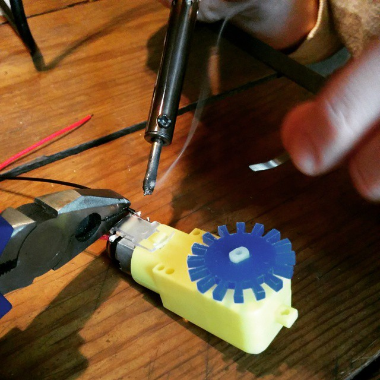
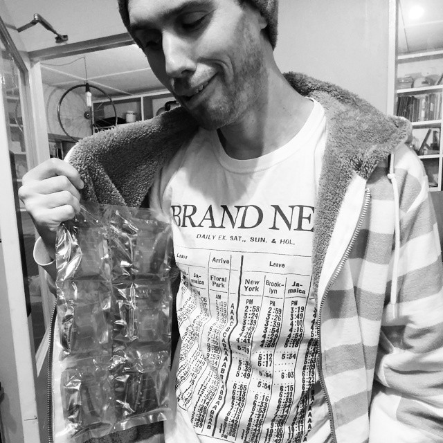

< Back to NodeBots Battle Royale
NodeBot Battle Royale challenge #1 is SumoBots - taking place on Saturday, 28th February 2015.
Two robots will be placed in a ring, the first robot to exit the ring is the loser.
Sign up on meetup.com
Sumo bots must fit into a cube measuring 20cm x 20cm x 20cm. The "arena" will be a hexagon 1m in diameter on a flat surface.
Robots must be built on the day. Pre-built robots are also welcome but will battle in an exhibition tournament.
Some building materials will be provided - plywood, straws, lollipop sticks, zip ties, glue, rubber bands, mounting hardware. No electronics are provided - either purchase a reference kit or bring your own!
 
The reference kit is available to purchase. which includes a chassis, motors, Arduino, batteries, battery holders and a bluetooth chip. N.b. your laptop will need bluetooth or you'll have to teather to your bot via USB.
For the "curious", the "upgraders", and the "homebrew" crowd the exact spec of the kit is:
If everyone uses the stock kit then no-one has an advantage. Meditating on the art of sumo may also help, but a beafy motor, bot-flipping servo or novel exoskeleton may be a more exciting path to victory.
Each match will consist of 3 rounds of 60 seconds each between 2 robots
The winner of each match will compete against winners of other matches, until one robot is determined to be the Grand Champion Sumo Bot
While damage/destruction is inevitable, it is not encouraged. Robots that purposely attempt to ruin their competition will be have points deducted.
If a robot leaves the competition arena, the opposing robot wins the round
The first robot to win 2 rounds winds the match.
If neither robot wins the round, the match judge will choose the winner, based on something whimsical and/or random, probably style or outrageous customisation.